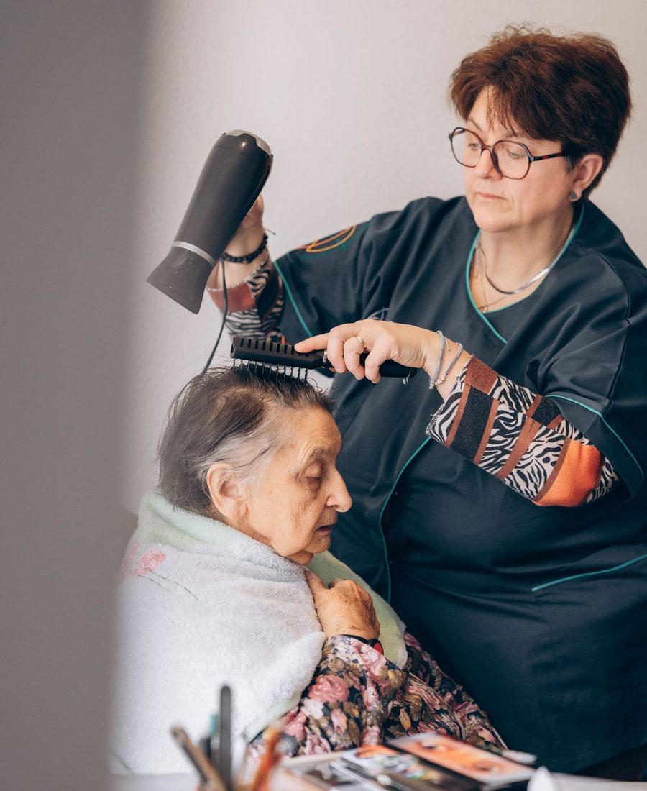
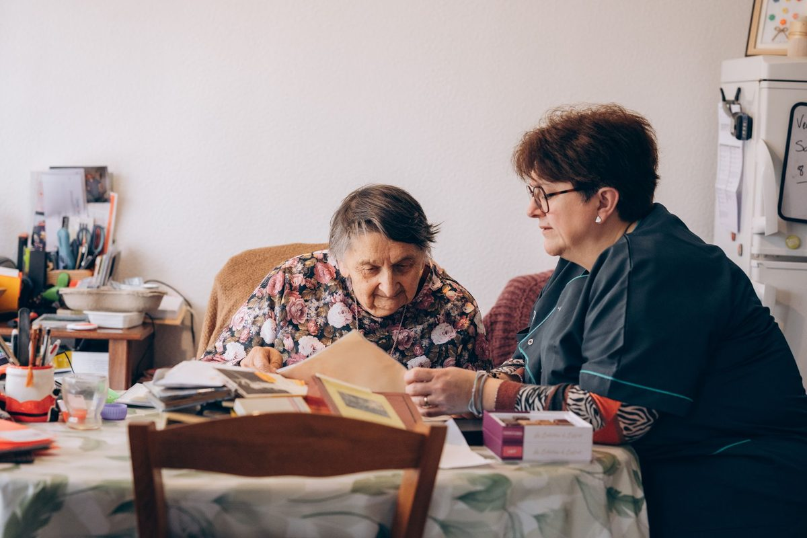
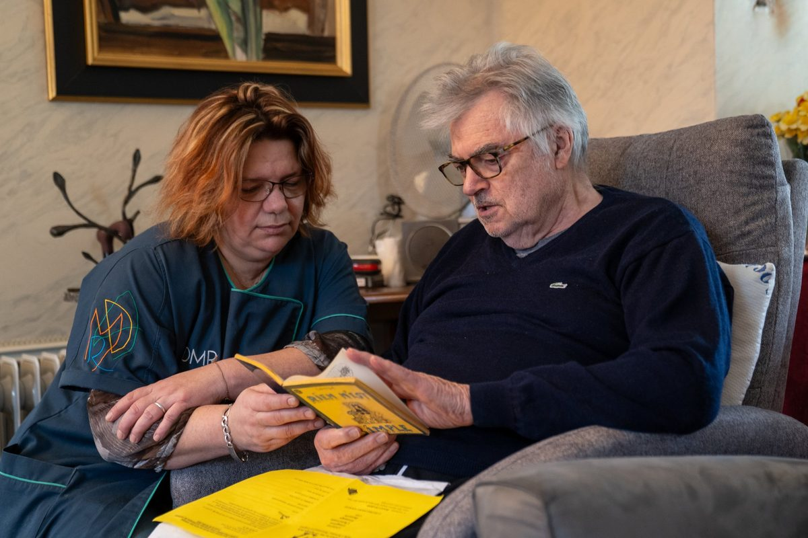
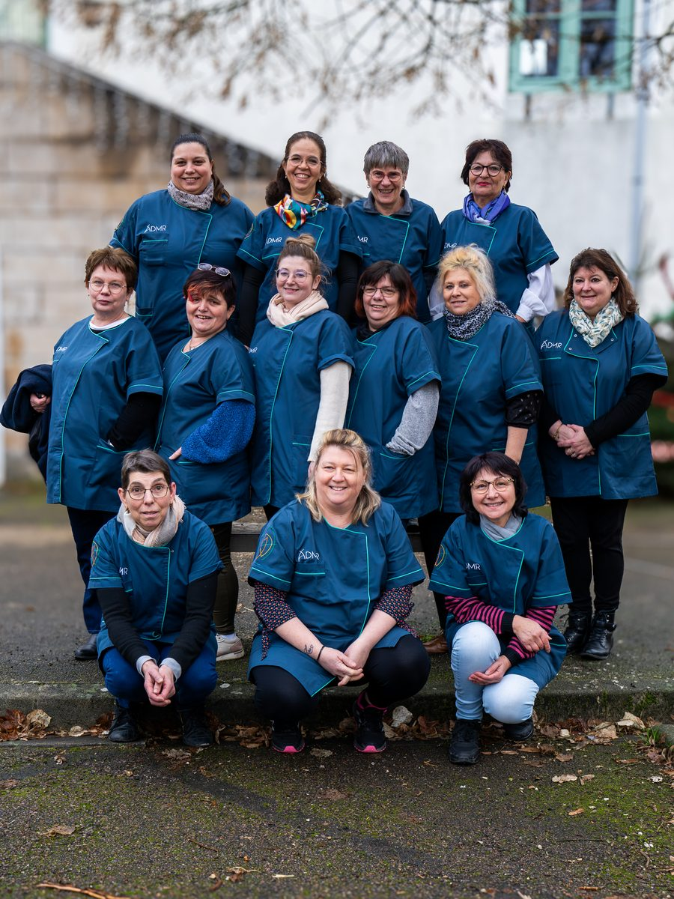
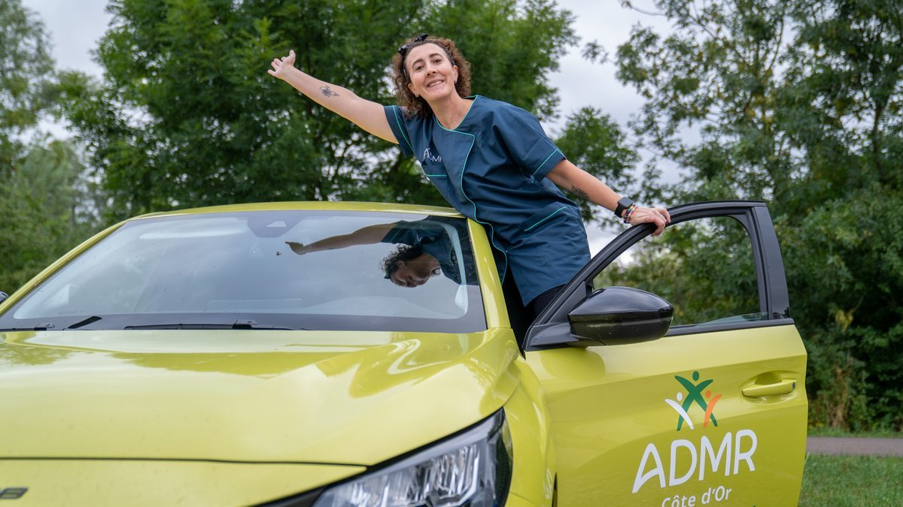
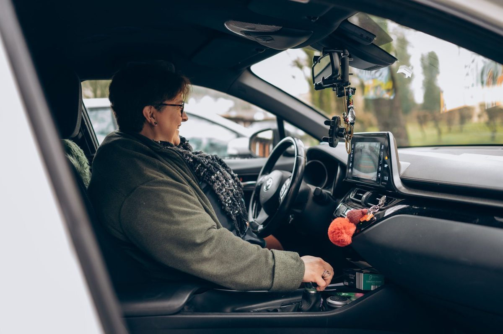
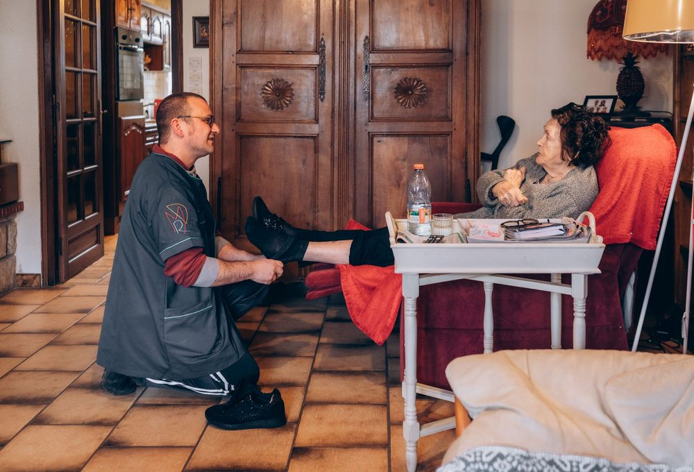
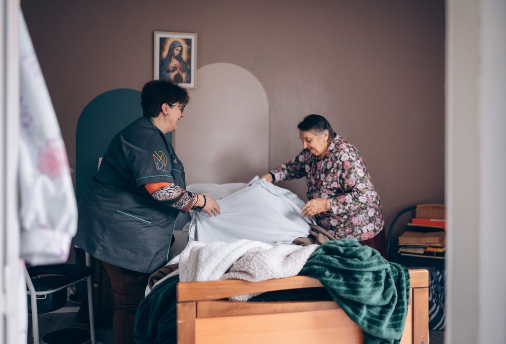
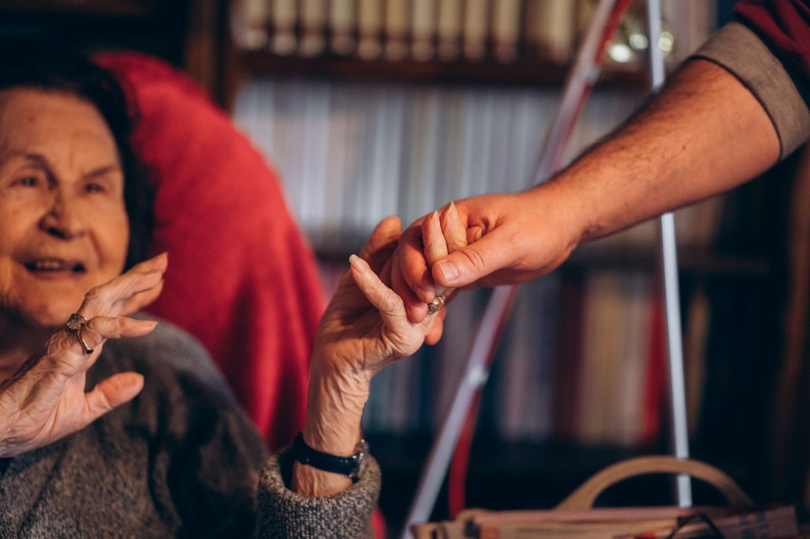

Arnay-le-Duc
ADMR Arnay le Duc
7 rue Président Carnot
03 80 84 87 397 h 30, quelque part en Côte-d'Or
Devenez aide à domicile ou auxiliaire de vie près de chez vous. Suivez la journée de l'une de nos intervenantes : demain, ce sera peut-être la vôtre.
Ici, on est 800 collègues, dans 22 antennes, avec une seule façon de travailler : prendre soin.
7h30
Lucienne vous attend, le café déjà prêt. Vous l'aidez à se lever, à faire sa toilette, à préparer son petit-déjeuner. Des gestes simples qui lui permettent de rester chez elle, dans ses habitudes.
Vos missions au quotidien
Devenez un(e) expert(e), grâce à notre appartement pédagogique et au tutorat.
Peu importe votre parcours, nous vous donnons les clés de la réussite. Grâce à notre appartement pédagogique et un accompagnement en binôme, vous apprenez les gestes professionnels en toute sérénité avant de vous lancer.

En vidéo
« Le rythme est soutenu. Mais le lien que vous allez créer est unique. »
Une intervenante ADMR
10h00
Entre deux tâches, il y a ce moment où l'on feuillette l'album de famille, où l'on lit le journal ensemble. Pour certaines personnes, vous êtes le seul visage de la journée.


Devenez le rayon de soleil de leur quotidien : un métier avec du sens.
Plus qu'une aide, vous apportez du sourire et de l'autonomie. En permettant à nos aînés de rester chez eux, vous exercez l'une des plus belles missions : créer du lien là où on en a le plus besoin.
En vidéo
« Ça va vite, très vite. Mais une fois avec eux, rien d'autre ne compte. »
Une intervenante ADMR
12h30
Un appel à l'antenne, un café partagé, un conseil sur une situation délicate. Sur le terrain, vous êtes autonome. Mais vous n'êtes jamais seul(e).
Jamais seul(e) sur le terrain : une équipe toujours à vos côtés.
Besoin d'un conseil ou d'une oreille attentive ? Avec nos 22 antennes en Côte-d'Or, il y aura toujours un collègue ou un bénévole proche de vous pour vous épauler. On vous accueille, on vous écoute, on vous soutient.
Ici, l'Humain n'est pas qu'un mot : c'est notre moteur.
Rejoignez une structure à but non lucratif où chaque décision est prise pour le bien-être des bénéficiaires et des salariés. Vous n'êtes pas un numéro, vous faites partie d'une communauté solidaire.

14h00
Villages, routes de campagne, quartiers de Dijon : entre deux rendez-vous, la Côte-d'Or défile. Et nos antennes couvrent tout le département pour que vos trajets restent courts.


Prenez la route sereinement : vous pouvez avoir une voiture de service.
Oubliez l'usure de votre propre voiture. La fédération dispose de 400 véhicules dédiés à nos intervenants. Discutons-en dès votre entretien pour faciliter vos déplacements au quotidien.
Vos déplacements sont justement remboursés.
Les temps et frais de déplacement entre chaque intervention sont pris en charge.
Nos points d'accueil
Tapez votre commune : on vous indique l'antenne qui la couvre.
ADMR Arnay le Duc
7 rue Président Carnot
03 80 84 87 39ADMR Genlis/Auxonne
60 rue Masson
03 80 65 53 34ADMR Sud Côte d'Or
2b Avenue Roger Duchet
03 80 26 37 10ADMR Pays Chatillonnais
2 rue de la Libération
03 80 91 09 16ADMR Dijon métropole
60F avenue du 14 juillet
03 80 51 69 81ADMR Genlis/Auxonne
4 bis rue de la Gare
03 80 47 95 36ADMR Gevrey/Nuits
10 rue de Lattre de Tassigny
03 80 39 75 82ADMR 3 Rivières
16 place Général Leclerc
03 80 85 51 12ADMR Laignes
Grande Rue
03 80 81 48 73ADMR Liernais
Place Martin dosse
03 80 84 49 56ADMR Mirebeau sur Bèze
8 Place Général Viard
03 80 36 57 74ADMR Montbard/Semur
3 bis Rue carnot
03 80 96 33 70ADMR Gevrey/Nuits
3 rue Jean Moulin
03 80 61 37 30ADMR Pontailler sur Saône
1 rue du 8 mai 1945
03 80 36 19 76ADMR Pouilly en Auxois
place Pierre et Marie Curie
03 80 90 64 76ADMR St Jean de Losne
19 allée du Bastion des Charmilles
03 80 29 01 43ADMR St Seine l'Abbaye
24 rue Carnot
03 80 35 12 19ADMR Saulieu
3 rue du Tour des Fossés
03 80 64 21 68ADMR Montbard/Semur
2ter Avenue de Ciney
03 80 91 58 22ADMR Seurre
22 rue du faubourg Saint-Georges
03 80 20 49 58ADMR Venarey les Laumes
5 avenue Jean Jaurès
03 80 89 17 93ADMR Vitteaux
21 rue Edmé Millot
03 80 49 69 80Nous ne trouvons pas cette commune dans notre liste. Vérifiez l'orthographe, essayez votre code postal, ou laissez-nous vos coordonnées.
16h30
L'école, le sport, la famille, les amis : votre planning a été construit avec votre équipe, en tenant compte de vos impératifs.
Votre vie privée est sacrée : un planning qui s'adapte à vous.
Parce que vous avez une vie en dehors du travail, nos plannings sont co-construits en équipe pour respecter vos impératifs personnels. Enfin un métier qui ne sacrifie pas votre temps libre.
Extraits de nos questionnaires de satisfaction
« C'est comme un rayon de soleil dans notre vie, même les jours de pluie. »
« Elle m'a apporté de bons conseils et la joie de vivre. Elle me remonte le moral. »
« Si nous devions lui donner une note, ce serait 22 sur 20. »
« Je ne voudrais pas l'échanger. J'ai déjà peur du jour où elle prendra sa retraite. »
« Elles sont patientes et pleines de gentillesse. Grâce à elles, mes parents vivent encore tranquillement chez eux. Un immense merci. »
« Avec elle, j'ai noué un degré de confiance irréprochable. »
« Merci d'être là. Pour que les personnes âgées restent à domicile. »
« Travailleuse, disponible, ponctuelle, à l'écoute : pleine de qualités. »
« Merci pour tout, à tous, y compris aux personnes que nous ne croisons pas. »
« Que du bien, et que rien ne change. Merci. »
Les noms des intervenantes ont été retirés. Ces mots sont adressés à nos équipes partout en Côte-d'Or.
18h00
Vous êtes motivé(e), sérieux(se) et souhaitez vous engager auprès de publics fragiles et des familles ? Plus qu'un CV, c'est votre personnalité qui fait la différence.
Le profil recherché

Vous savez gérer votre temps et vos interventions en toute autonomie, au plus près des besoins de chacun.
« Capable de prendre une initiative, et le travail est bien fait. »Avis client, Saint-Jean-de-Losne

Vous intervenez dans le respect de la personne et de son intégrité, avec écoute et bienveillance.
« Une personne discrète, agréable et serviable. »Avis client, Sud Côte-d'Or

Vous aimez rendre service et créer du lien : c'est le cœur du métier d'aide à domicile.
« Elle a toutes les qualités requises pour ce métier. »Avis client, Venarey-les-Laumes
En vidéo
« C'est un métier qui prend beaucoup. Mais qui rend tellement plus. »
Une intervenante ADMR
Demain, 7 h 30
Deux façons simples de nous rejoindre, à vous de choisir.
Choisissez votre fichier, cliquez sur envoyer : votre CV nous arrive directement.
Pas le temps ? Laissez vos coordonnées et on vous rappelle.
Envie de voir toutes nos offres ?Découvrez nos postes ouverts et postulez en ligne.
Voir nos offres d'emploiEt après ?
Travailler à l'ADMR
Qui sommes-nous ?